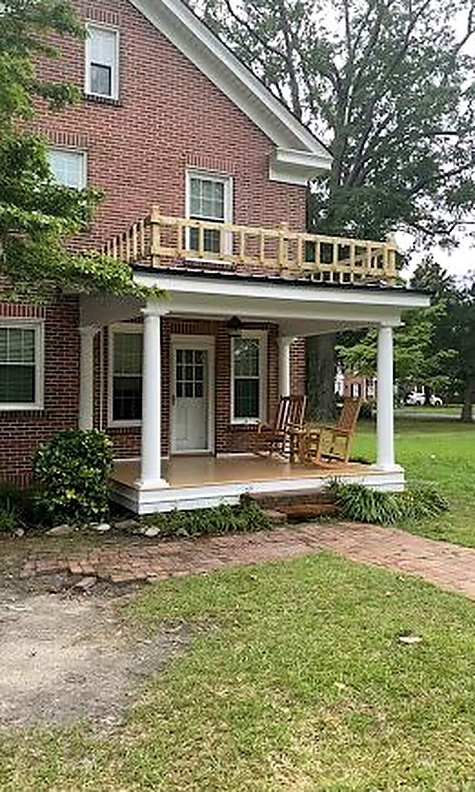
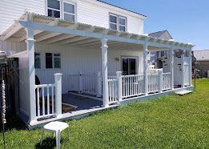

Interior and Exterior Painting
Whole-house interiors, exterior repaints, ceilings, trim, doors, and porch floors. Half our name is Paint and we take the prep more seriously than the paint.
Full scope and pricing →Two-story wood houses that need the rot fixed before anybody puts a brush on them.
Farmville has a downtown and a set of streets around it that are better than a town this size has any right to be. Big two-story frame houses from the tobacco years, wide porches, original wood siding, tall wood windows and a lot of trim detail. They photograph beautifully and they are honest work to maintain.
The problem with a house like that is that it needs painting every seven to ten years in this climate, and the moment it goes twelve, paint stops being the fix. Water gets past a failed caulk joint or a bare nail head, gets into the end grain of a trim board, and the board is gone from the inside while the paint on the outside still looks alright. So on a Farmville exterior we walk the whole house with an awl before we price anything. You get one number that covers replacing what is bad and painting all of it.
We prime every replacement board on all six sides, cut ends included. On a house with this much trim that is a slow afternoon and it is the difference between a paint job that lasts eight years and one that lasts three.
Call or text (252) 801-4500. Send photos and we will usually tell you what you are looking at before we drive out.
Call (252) 801-4500Mon–Fri 7:00am–5:30pm · Sat 8:00am–2:00pm · Sun closed
Whole-house interiors, exterior repaints, ceilings, trim, doors, and porch floors. Half our name is Paint and we take the prep more seriously than the paint.
Full scope and pricing →Soffit and fascia rot, siding repair and replacement, porch columns and posts, band boards, window and door trim, and the framing behind all of it.
Full scope and pricing →Shingle reroofs, leak repairs, storm damage, structural roof framing, and full tear-off and EPDM replacement on flat commercial roofs.
Full scope and pricing →A look at some of our latest jobs.



If it was built before 1978, probably yes, and it is a legal requirement, not an upsell. Lead-safe containment is its own line on our estimate so you can see exactly what it costs. Any contractor who does not mention it on a house that age is cutting a corner you will not see.
Often we can, and on a house like the ones on Main and Wilson it is usually the better answer. Reglazing, repairing the sash and repainting keeps the character and costs less than replacement units that will not match.
Free estimate, a real written price, and a family business twenty minutes down the road.
Prefer to text? Send photos of the problem to (252) 801-4500 and we will tell you what we think.